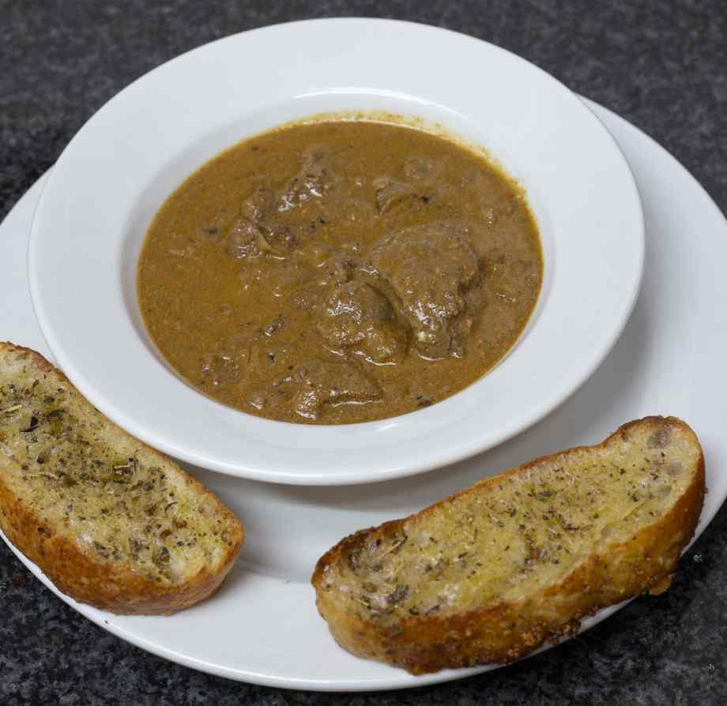

1. PRICE: 50
2. SERVING SIZE: 5
Ever get tired of eating the same thing over and over? Try this classic recipe with Portuguese roots, loved by South Africans everywhere. It can be found in almost any restaurant in South Africa, and is usually enjoyed with crusty bread and delicious grass-fed butter. You can reduce the amount of heavy cream for less gravy if you choose, and regular bread can be substituted with this keto-friendly bread if you’re following a low-carb diet.
Here is the list of extra meals you can add
CHICKEN LIVERS
1. PRICE: 50
2. SERVING SIZE: 5
3. About the meal
Here is the list of extra meals you can add